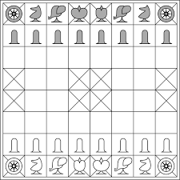

Lesson-1: History of Chess
Chess is a board game which starts from India over 1500 years ago. There is no specific
person who invented chess. On that time people called it chaturanga. The game spread from India
to Persia in the 7th century and then westward to the wider Muslim world following the Islamic
conquest of Persia. Islamic influence then spread the game to southern Europe, reaching western
Europe by about 1000 CE. Chess spread through the Islamic world and then Europe, then the rules
of chess were modified and pieces were renamed.The modern rules of chess emerged in Italy and
Spain by the dawn of 15th century. Authors began publishing books on chess, and works by chess
masters such as Luis Ramierez de Lucena, Ruy Lopez de Segura,and Gioachino Greco influenced
the development of the study of chess that persists to this day.
There is the image of Chaturanga_

Add important notes: